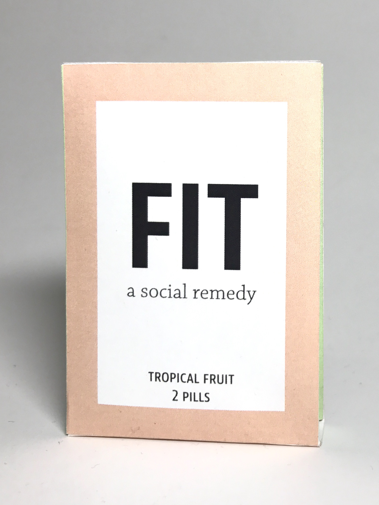
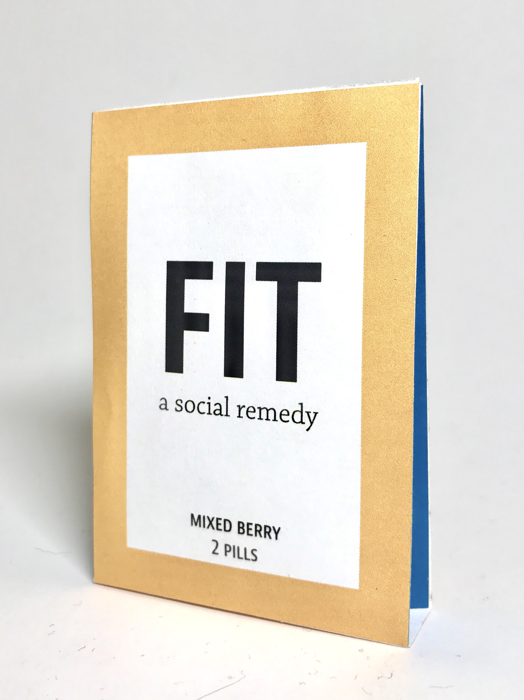
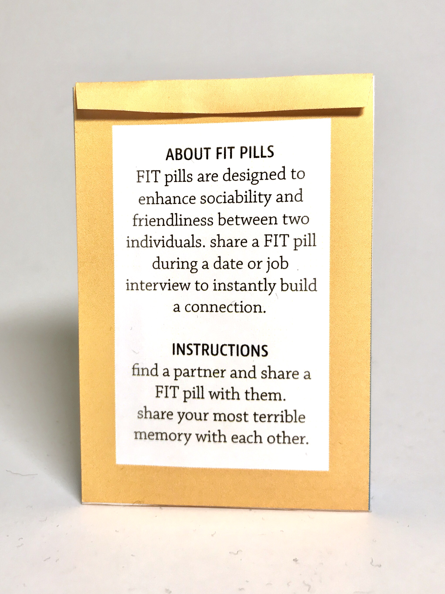
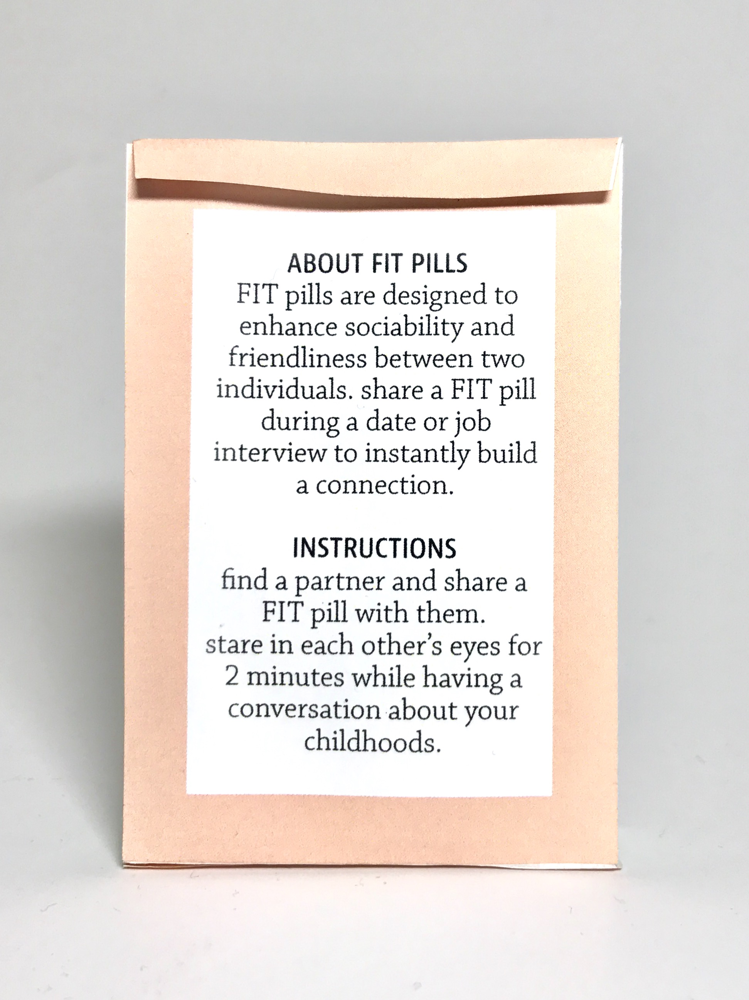
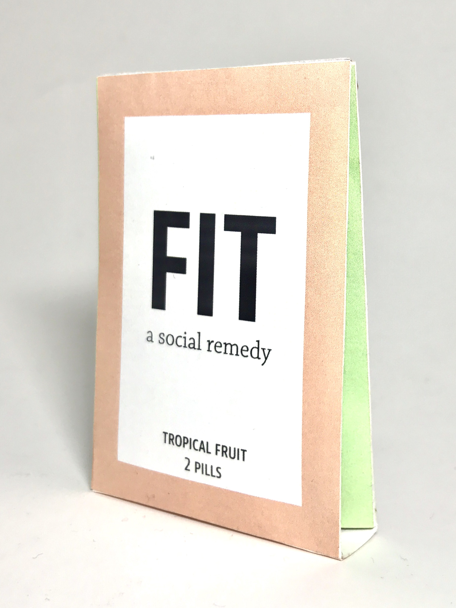
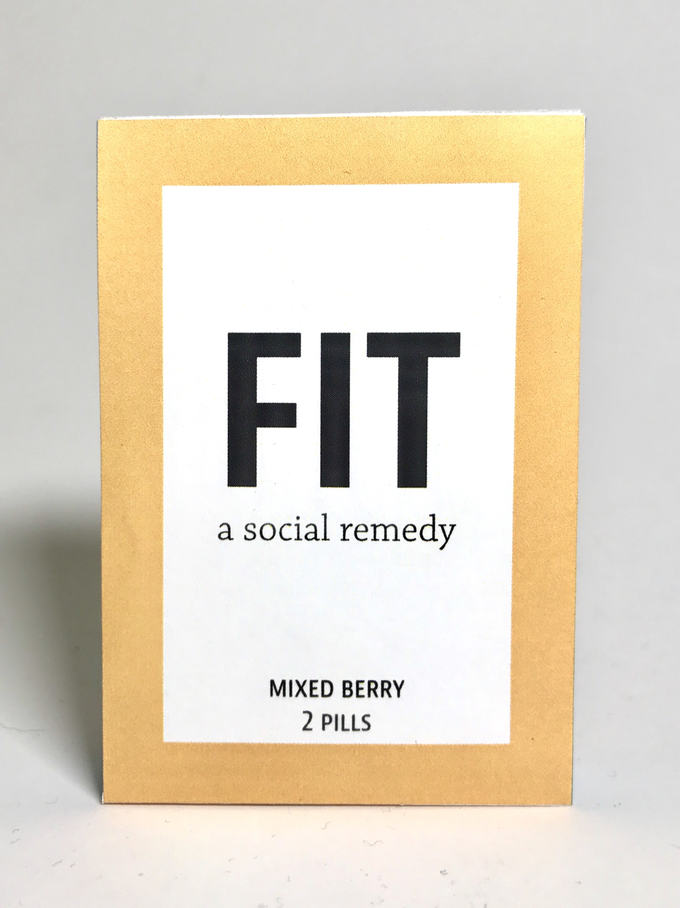

NinaMent
FIT Pills
THAD Design
Passerby
Foundation Year Drawings
FIT Pills was prompted by the phrase “Create a piece that can fit two people” in my foundations spatial dynamics class. I was inspired by placebo diet pills which claim user weight loss under the circumstances of healthy diet and exercise; therefore, the pills don’t actually serve its purpose but the purchase and tangible product incite behavior to help lose weight. Since the “pills” themselves held no real function, I wanted to focus my attention to the product packaging and the questions on the back that would prompt interaction. I took and modified questions from a study claiming its questionnaire can make two strangers fall in love, which seems unlikely but, with cooperation and vulnerability, can at least create an unexpected, close relationship. With these two central ideas in mind, I created the brand FIT pills.
     Nina Ment is my final project for the Web Design wintersession course, where I appropriated the standard format of an online shopping site to create one that “sells” the random pieces of trash discarded around my dorm. I was influenced by brands that rely solely on extravagant marketing and flamboyant websites to attempt authenticity and distract from their mediocre products, so this website contains several flaws (the server not working, only a few items, no reviews).
This website was created with HTML, CSS, jQuery, and JavaScript. Nina Ment was selected for the upcoming 2018 Graphic Design Triennial.
Visit the live website here.


Working as a research and design assistant for the RISD art history department, I received the opportunity to design the department rebranding as it changed its name to the Department of “Theory and History of Art and Design” (THAD). With the constraints of keeping a clean, structural visual with a limited color palette of black, white, and red, I also had to take into consideration the previous branding identity and pay homage to it. Other responsibilites as a research and design assistant included designing the Redwood Contemporary Art Initiative logo for the Redwood Library in Newport. Design criteria included a representation of the library’s classical architecture and a link to RISD THAD’s visual identity.
Currently, I am working on restructuring the THAD website and creating printed posters for several upcoming lectures and events.
The music video-esque short film “Passerby” revolves around the story of two students who always hear descriptions and rumors of each other but have always passed each other by. They continue with their lives with awkward encounters as strangers, yet they know close to everything about each other. The video ends with the two sitting next to each other in Carr Haus, finally formally interacting but still retreating to an awkward state of discomfort. In this project, I participated mostly with post-production editing using Premiere Pro as well as acting (of course). This film was made with Basia Bieniek, Elisha Gillette, and Natalie Paik.
Watch the full video here


Selected charcoal and conte drawings from first and second semester Foundation Year drawing studio with Jonathan Sylvia and Victor Lara.